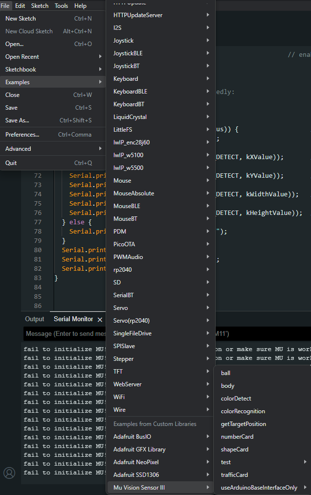
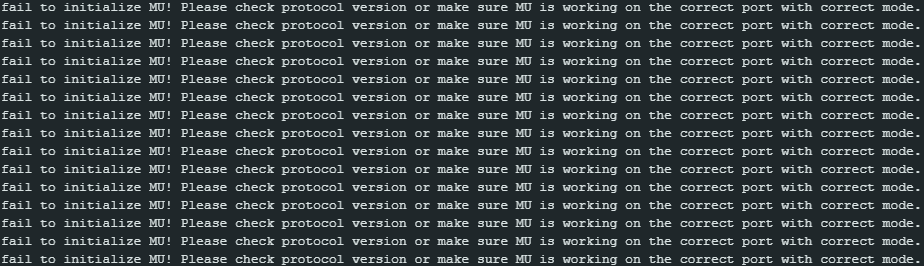
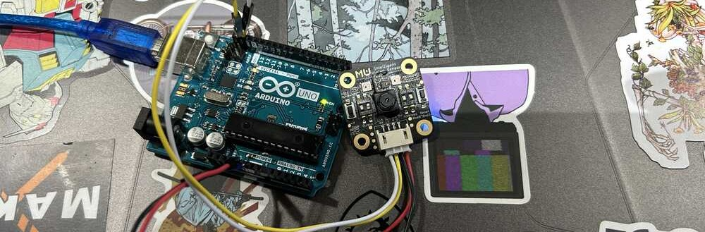

Another Revival of an Old Project - Mu Vision Sensor
So I started this project with the goal of having my robot see someone and react to their presence either by speaking or having some sort of nonverbal communication. The goal was to use an ESP32 SEEED Sense board, with the onboard camera to make decisions with what we are doing. So I started the way any one would, going straight to reddit and asking if the board I purchased would work without using the online sensing demo. And I got one very funny, but very succinct answer:
So I did what any self respecting tinker would do, I thanked the kind passer by, googled furiously for another hour and concluded that they are correct.
Having accepted my fate, I delved in and hunted for another solution when I noticed that I had something in my parts backlog that already MAY solve this problem. A long time ago I was looking to build a robot with my hobby time and my Youtube journeys brought me to this video:
To make a long story short, I never made that robot. But I did have the parts lying about, so I decided to take matters into my own hands and get this chip working for me for this project.
The Sensor
The Mu Vision sensor is a pre trained board that according to the website can detect balls, people, and other objects. So since I just want simple detection I believed that this would work in an excellent way.

To make this sensor work I followed the steps in the video above. The first being, upload the vision sensor library.
The library can be found at this link:
It is easy to install as all you do is download the library and unzip the file. Once you unzip it drop it into the "libraries" folder of your Arduino library. In my case all of this is in documents.
Running the Test program
So once you finish installing this library to your Arduino program you have to have some code to run. Luckily, the sensor comes with some example code to make your life easier. When you go into Arduino and go to File>Examples>MuVisionSensorIII you find some great code which in this case I wanted to run the "body" code to find a person.
The code uploaded I was able to compile it and run the default settings for the Mu Vision board. While compiling it does show a note:

I decided to ignore this because sometimes things just work. And when I did a google search nothing came back warning against the use of this board. So in doing this I went ahead and ran the code. Sadly. This was not one of those times when everything just kinda works out...
The error
I was met with this error:
With this I tried ot rewrite the mode, change how it was connected, and a few other things, but in the end nothing worked. I will be trying this on a pure Arduino board to see if that works next. I hope it works but will be sad if that fixes the problem because I cannot use an arduino for my robot the way I want it to work. Will update tomorrow.
Checking if it works at all with Arduino
Because of the warning I received on the unit I brought out one of my old Arduino to be able to see if it was true and the libraries worked on those chipsets properly. After hastily plugging it in I uploaded the code to the system and crossed my fingers.
I got a very good outcome already in that the system was blinking more than it normally was before where it was a dead chip. Taking this into consideration I crossed my fingers and checked the serial output.
Success!
I recorded this video while leaning back and forth putting my face into the location of the sensor and it would read and not read depending if I was in the range of the sensor.
- Things to do:
- Figure out if the vision sensor works on another chipset
- If it does not, find another vision sensor
- Find an input to keep the robot from falling off of tables.